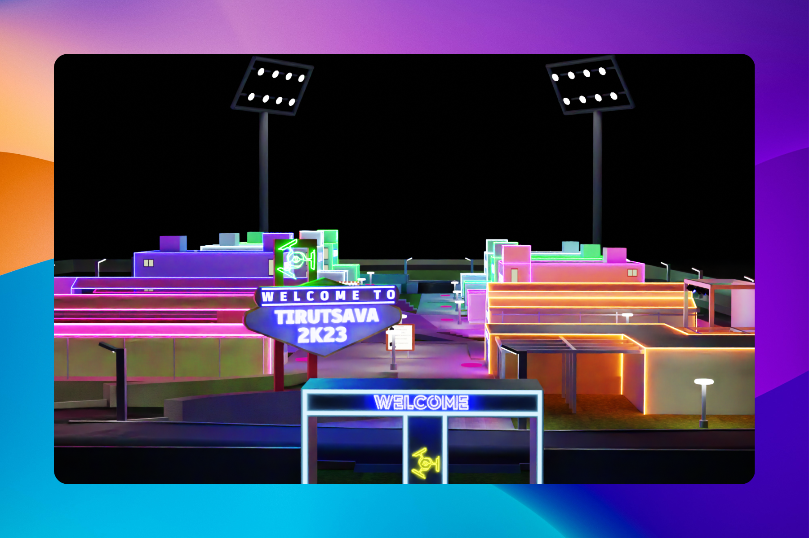
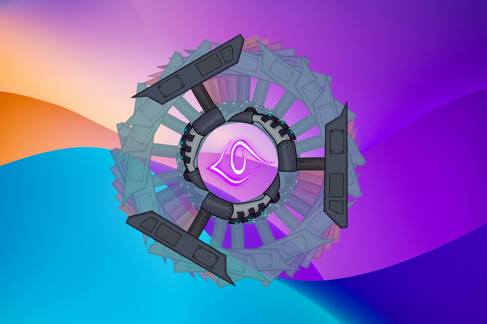
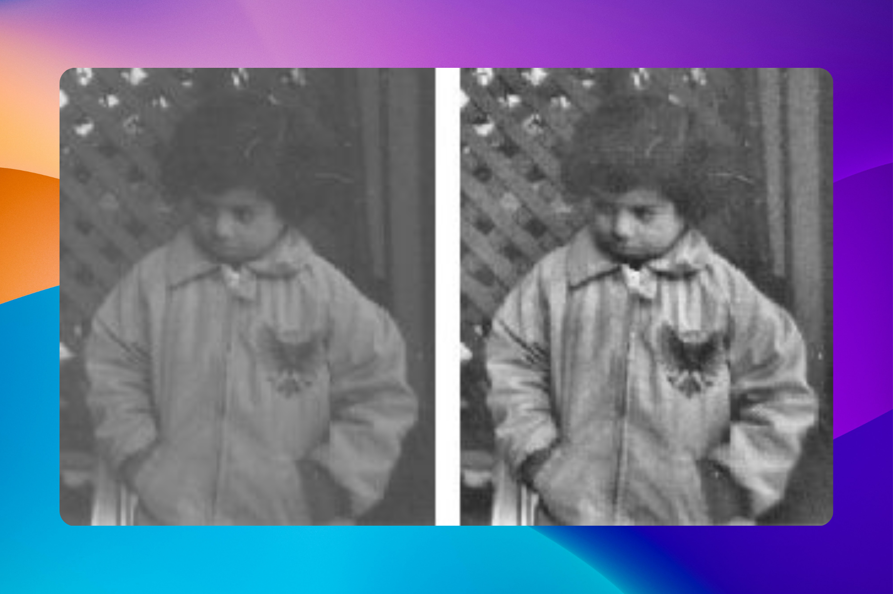
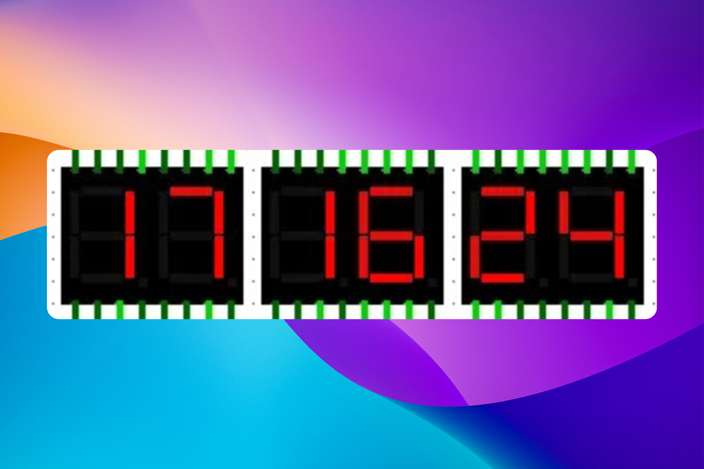
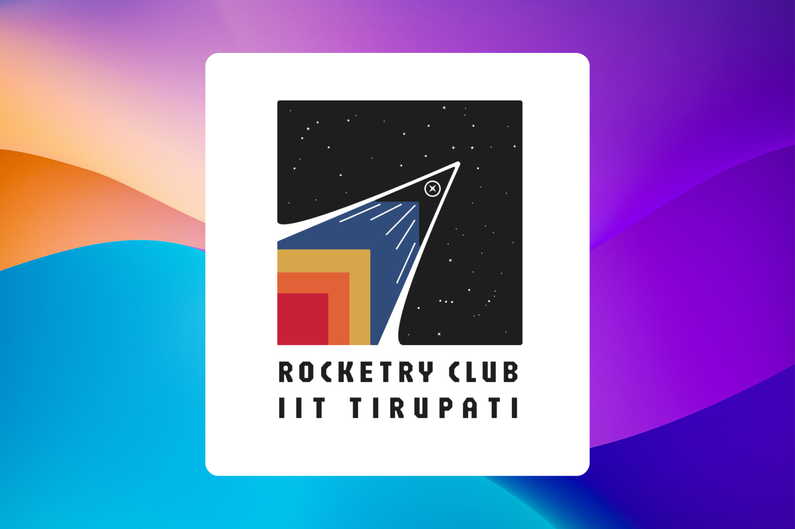
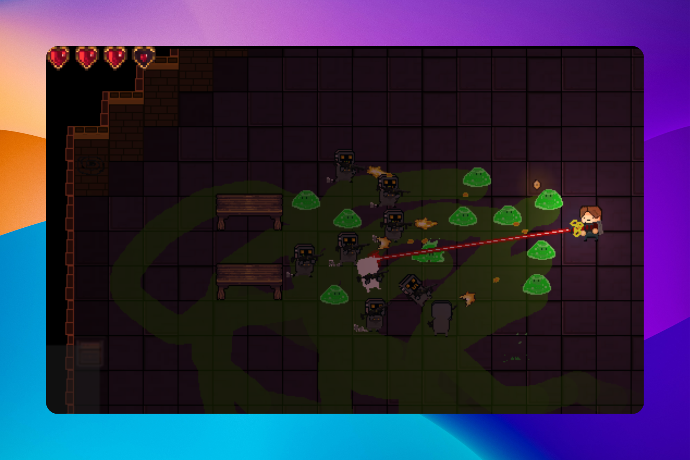
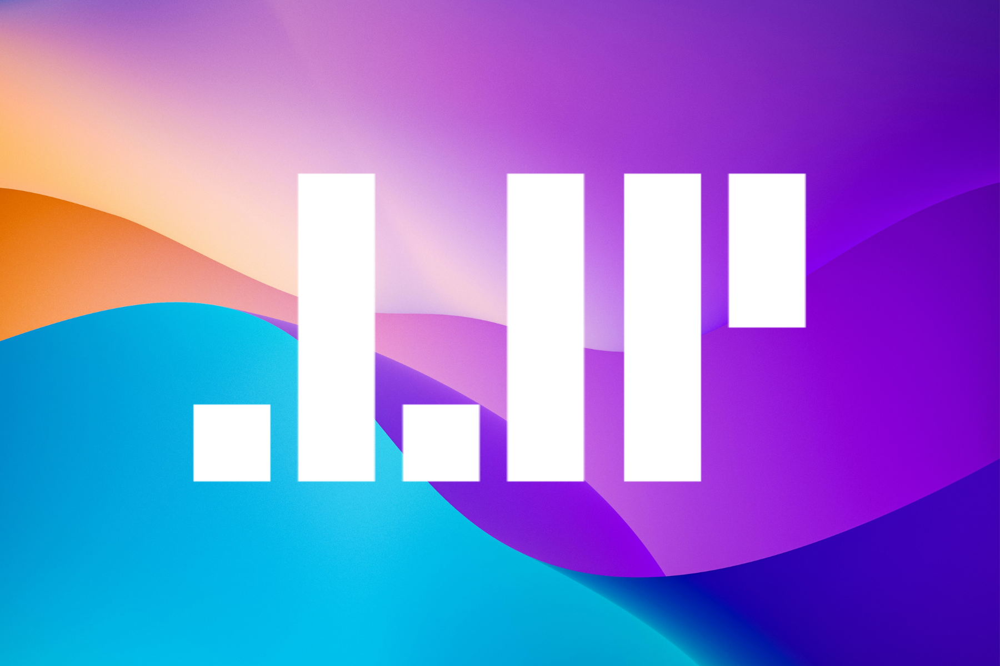

Works

Tirutsava 2023 3D Website
Created the 3D fest model in Blender and collaborated on web visuals with a Three.js developer.

Tirutsava 2025 – Graphics Design Head
Led the visual identity for Tirutsava 2025, aligning all designs with its cyberpunk-euphoria theme.

Image Enhancement Project – Python
Built an image enhancement tool in Python using spatial and frequency domain techniques.

24-Hour Digital Clock – Logisim
Built a fully functional 24-hour digital clock in Logisim using custom counters and decoder logic.

Rocketry Club Logo – IIT Tirupati
Crafted a sharp, original logo for the Rocketry Club using Figma.

Game Design – Inter IIT Tech Meet (2022–2024)
Part of the game design team for three editions of the Inter IIT Tech Meet.

Personal Portfolio Website
A living design playground — minimal, animated, and fully handcrafted.
[REDACTED]
[REDACTED]